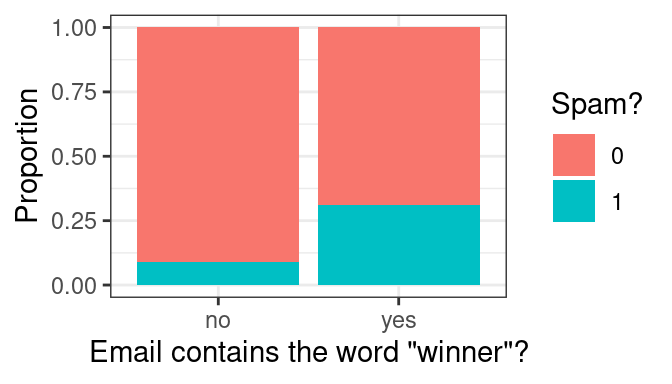
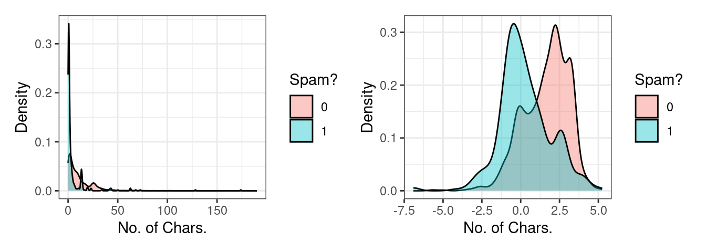
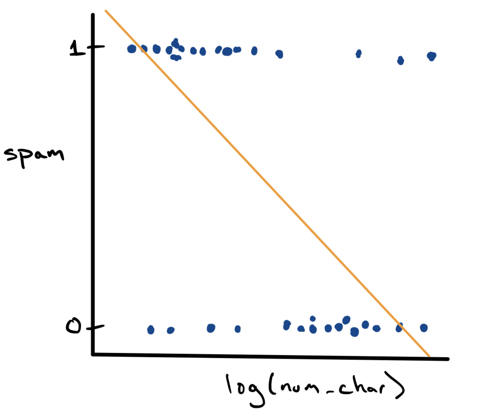
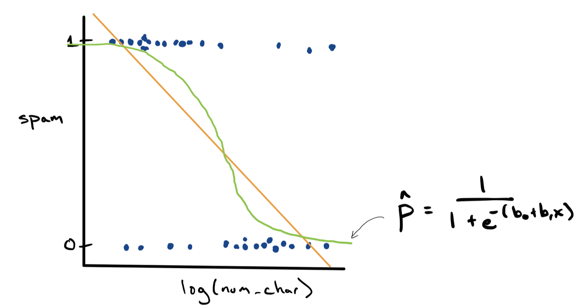

# A tibble: 3,921 × 21
spam to_multiple from cc sent_email time image attach
<fct> <fct> <fct> <int> <fct> <dttm> <dbl> <dbl>
1 0 0 1 0 0 2012-01-01 06:16:41 0 0
2 0 0 1 0 0 2012-01-01 07:03:59 0 0
3 0 0 1 0 0 2012-01-01 16:00:32 0 0
4 0 0 1 0 0 2012-01-01 09:09:49 0 0
5 0 0 1 0 0 2012-01-01 10:00:01 0 0
6 0 0 1 0 0 2012-01-01 10:04:46 0 0
7 0 1 1 0 1 2012-01-01 17:55:06 0 0
8 0 1 1 1 1 2012-01-01 18:45:21 1 1
9 0 0 1 0 0 2012-01-01 21:08:59 0 0
10 0 0 1 0 0 2012-01-01 18:12:00 0 0
# ℹ 3,911 more rows
# ℹ 13 more variables: dollar <dbl>, winner <fct>, inherit <dbl>, viagra <dbl>,
# password <dbl>, num_char <dbl>, line_breaks <int>, format <fct>,
# re_subj <fct>, exclaim_subj <dbl>, urgent_subj <fct>, exclaim_mess <dbl>,
# number <fct>Logistic Regression
A model for binary classification
The framework that we used to build a predictive model for regression followed four distinct steps:
- Decide on the mathematical form of the model: we used a linear model with potential for transformations and polynomials
- Select a metric that defines the “best” fit: we used \(R^2\) or \(\text{MSE}\)
- Estimating the coefficients of the model that are best using the training data: we found the coefficients that minimized our metric of choice on the training data
- Evaluating predictive accuracy using a test data set: we calculated testing \(R^2\)/\(\text{MSE}\) using ~20% of the data that was withheld
We used this process to build our first simple linear regression model to predict high school graduation rates but the same four steps are used by Zillow to build ZestimateTM, their deep learning model to predict house price.
These are also the same four steps that we will use as we shift in these notes to the task of classification. In a classification task, we seek to predict a response variable that is categorical, very often a two-level categorical variable. Classification models are everywhere: they help doctors determine whether or not a patient has a disease, whether or not an image contains a particular object (say, a person or a cat), and whether or not customer will purchase an item.
Example: Spam filters
Email spam, also referred to as junk email or simply spam, is unsolicited messages sent in bulk by email (spamming). The name comes from a Monty Python sketch in which the name of the canned pork product Spam is ubiquitous, unavoidable, and repetitive1. A spam filter is a classification model that determines whether or not a message is spam based on properties of that message. Every mainstream email client, including Gmail, has a spam filter built in to ensure that the messages that get through to the user are genuine messages.
The Data
In order to build a spam filter, we’ll need a data set to train our model on. This data set must have as the unit of observation a single email message, record whether or not the message was spam (the response), and record various features of the message that are associated with being spam (the predictors). Such a data set, with nearly 4000 observations, can be found in the email data frame in the openintro library.
We see in the left most column the response variable, spam, coded as 0 when a message is not spam and 1 when it is. The first predictor, to_multiple, is a 1 if the message was sent to multiple people and 0 otherwise. cc records the number of people who are cc’ed on the email. winner (listed as a variable below the glimpse of the dataframe) records whether or not the word “winner” showed up in the message. The remaining predictors you may be able to intuit by their names, but you can also read the help file that describes each one.
These variables seem like they might be useful in predicting whether or not an email is spam, but take a moment to consider: how were we able to get our hands on data like this?
This particular data set arose from selecting a single email account, saving every single messages that comes in to that address over the course of a month, processing each message to create values for the predictor variables, then visually classifying whether or not the message is spam. That’s to say: this data represents a human’s best effort to classify spam2. Can we build a model that will be able to identify the features that mark a message as spam to be able to automatically classify future messages?
Exploratory Data Analysis
Let’s see how well a few tempting predictors work at separating spam from not spam by performing some exploratory data analysis. We might expect messages containing the word “winner” to be more likely to be spam than those that do not. A stacked, normalized bar chart can answer that question.

Indeed, it looks like around 30% of emails with “winner” were spam, compared to roughly 10% of those without. At this point, we could consider a very simple spam filter: if the message contains “winner”, then classify it as spam.
Although this is tempting, it is still a pretty weak classifier. Most of the messages with “winner” are not spam, so calling them spam will result in most of them being misclassified.
So if “winner” isn’t the silver bullet predictor we need, let’s try another: num_char. This variable records the total number of characters present in the message – how long it is. We probably have no prior sense of whether spam would be more likely to consist of short or long emails, so let’s visualize them. This predictor is numerical continuous, so let’s overlay two density plots to get a sense of the distribution between spam and not spam.

The original plot on the left is very difficult to read because this variable is heavily right-skewed: there are a small number of very long messages that obscure much of the data in the plot. On the right is a more useful visualization, one of the log-transformed version of the same variable.
We see a reasonable separation here: spam messages tend to be shorter than non-spam messages. We could consider another very simple spam filter: if the log number of characters is less than 1.2, classify it as spam.
However, this simple filter suffers from the same problem as the first. Although these density plots have the same area, there are in fact far fewer overall instances of spam than not-spam. That means that there are far more not-spam messages with a log number of characters less than 1.2 than there are spam message. This filter, like the first, would misclassify much of the training data.
What we need is a more general framework to fold the strength of these two variables - as well as many of the other ones in the data set - into a model that can produce a single, more accurate prediction. We will start from the framework of multiple linear regression and move to something that can be used for classification.
From Linear to Logistic Regression
Let’s start by taking our existing simple linear regression model from the past few notes and applying it in this classification setting. We can visualize the relationship between log_num_char and spam using an ordinary scatter plot.

This is a strange looking scatter plot - the dots can only take y values of 0 or 1 - but it does capture the overall trend observed in the density plots, that spam messages are longer. Since we have a scatter plot, we can fit a simple linear regression model using the method of least squares (in gold).
\[ \hat{y} = b_0 + b_1 x \]
While this is doable, it leaves us with a bit of a conundrum. For a low value of log_num_char it’s possible that we would predict \(\hat{y} = 1\) and for a high value it’s possible that we’d predict \(\hat{y} = 0\). But what if log_num_char is somewhere in the middle? What does it mean if we predict that the value of spam is .71?
One approach to resolving this is to treat our prediction not as a value of \(y\), but as a estimate of the probability, \(\hat{p}\), that \(y = 1\). We can rewrite the model as:
\[ \hat{p} = b_0 + b_1 x \]
This resolves the conundrum of how to think about a prediction of .71. That is now the model’s determination of the probability that the message is spam. This tweak solves one problem, but it introduces another. How do we interpret predictions at very high values of log_num_char, where \(\hat{p}\) is negative? Surely a probability cannot be negative!
We can fix this by changing the mathematical form of the model used to predict the response. Instead of it being a line, we can use an alternative function that prevents predictions greater than 1 and less than zero. The most commonly used function is called the standard logistic function:
\[ f(z) = \frac{1}{1 + e^{-z}}\]
\(z\) can be any number of the real number line. As \(z\) gets large, \(f(z)\) approaches 1; as \(z\) is negative, \(f(z)\) approaches 0; when \(z\) is 0, \(f(z)\) is .5.
This is a very clever idea. It allows us to combine all of the information from our predictors into a single numerical score, \(z\). We can obtain \(z\) through a form that is familiar to us: \(b_0 + b_1 x_1 + \ldots + b_p x_p\). This score can then be sent through the logistic function to estimate the probability that \(y = 1\). This method is called logistic regression.
- Logistic Regression (for prediction)
-
A model to predict the probability that 0-1 response variable \(y\) is 1 using the inverse logit of a linear combination of predictors \(x_1, x_2, \ldots, x_p\).
\[ \hat{p} = \frac{1}{1 + e^{-\left(b_0 + b_1 x_1 + \ldots + b_p x_p\right)}} \]
Can be used as a classification model by setting up a rule of the form: if \(\hat{p}_i\) > threshold, then \(\hat{y}_i = 1\).
We can visualize the approach that logistic regression takes by sketching the predictions as a green s-shaped curve on top of our scatter plot.

Classification errors
Now that we have a model archetype to move forward with, we are almost ready to build it and see how it does. First though, we should first consider what happens when our predictions are wrong. Hopefully, we will classify most of our e-mails correctly, but we will fail at least some of the time. We might predict that an e-mail is spam when it is not. In other cases, we might predict that an e-mail is not spam when it actually is. Therefore, there are two types of error we should consider.
Recall that based on the email dataset, 1 refers to an e-mail which is truly spam. In a binary classification problem, we often call 1 a positive result. Likewise, 0 refers to an e-mail which is genuine. We call 0 a negative result. This sets up formal definitions for the two types of errors mentioned above.
- False Positives
- Predicting a 1 that is in fact a 0
- False Negatives
- Predicting a 0 that is in fact a 1
Misclassification rate
While thinking about failing is not exciting, it does give us a way to think about how well our classification model is doing. We would like the number of misclassifications over a large number of e-mails to be as small as possible. This fraction can be quantified as the misclassification rate or \(\text{MCR}\) for short.
Misclassification Rate
\[\text{MCR} = \frac{\text{no. FP} + \text{no. FN}}{\text{no. of predictions}} = \frac{\text{no. of misclassifications}}{\text{no. of predictions}}\]
Just like in a multiple linear regression context, we can fit a suite of different models on the training set and evaluate their performance on the testing set. Now, our model type of choice is logistic regression and our evaluation metric is \(\text{MCR}\).
The Ideas in Code
Fitting Logistic Regression with glm()
The computational machinery for fitting logistic regression looks almost identical to what we used for linear least squares regression. The primary function we’ll use is glm(). We will also use a different broom function called tidy() to display the coefficients \(b_0\) and \(b_1\). tidy() can also be used in a linear regression context as well.
# A tibble: 2 × 3
term estimate std.error
<chr> <dbl> <dbl>
1 (Intercept) -1.72 0.0606
2 log(num_char) -0.544 0.0365These coefficients are a bit more challenging to interpret since they’re no longer linearly related to the response. The sign of the coefficient for log(num_char), however, is informative: it tells us that messages with more characters will be predicted to have a lower probability of being spam.
Evaluating model performance
Calculating \(\text{MCR}\)
Let’s take a look at the predictions that this model makes back into the data set that it was trained on. When using the predict() function on logistic regression models, there are several different types of predictions that it can return, so be sure to use the additional argument type and supply it with "response". This will return \(\hat{p}_i\) (probability of 1) for each observation.
We can then move from values of \(\hat{p}_i\) to values of \(\hat{y}_i\). In general, our rule will be to check and see whether each value of \(\hat{p}_i\) is greater than .5. If so, we will assign the value of 1; otherwise, we will assign it 0. This sounds similar to creating a logical variable, but assigning something different than TRUE and FALSE to each observation in the dataset. We will use a function called ifelse(), therefore, which will allow us to assign we want (1 and 0).
The following block of code completes both of these two steps and saves the results back into the email data frame.
We are now ready to calculate \(\text{MCR}\). First, we can find all of the emails for which the y and y_hat_m1 don’t match. Then, we can take the proportion of those e-mails out of all e-mails in the dataset.
# A tibble: 1 × 1
MCR
<dbl>
1 0.0956Overall, we are misclassifying around 10 percent of all e-mails (both spam and genuine), which doesn’t look like a bad start, but we might want to take a little deeper of a dive to see how the model is misclassifying observations.
False positives versus false negatives
Indeed, we can see if the model is failing at classifiying one type of e-mail more than another. To do this, we can find the number of false positives and false negatives. We can group our observations by their actual class versus their predicted class. There are four possibilities, so there will be four groups.
email |>
group_by(spam, y_hat_m1) |>
summarise(n = n())# A tibble: 4 × 3
# Groups: spam [2]
spam y_hat_m1 n
<fct> <dbl> <int>
1 0 0 3541
2 0 1 13
3 1 0 362
4 1 1 5We actually see that the model is doing great at predicting correctly when the e-mail is genuine (few false positives), but doing horribly at detecting spam (many, many false negatives). Only \(5\) out of the \(367\) spam e-mails are being classified correctly. Essentially all of our mistakes are in the form of false negatives! We also can see here that there are way more genuine e-mails than spam e-mails in the dataset, so our misclassification rate is being inflated as a result. Clearly, more than just the length of an e-mail is necessary to help us detect spam.
Training and testing sets
One final note: this \(\text{MCR}\) was calculated over all of the data. The best way to evaluate the performance of the model is to split the data into training and testing sets, fit the model on the training set and evaluate it on the testing set. We can calculate both training and testing versions of \(\text{MCR}\) and compare them to see if the model is doing well on e-mails it hasn’t yet seen.
Summary
In these notes we introduced the concept of classification using a logistic regression model. Logistic regression uses the logistic function to transform predictions into a probability that the response is 1. These probabilities can be used to classify y as 0 or 1 by checked to see if they exceed a threshold (often .5).
We then went through the process of fitting logistic regression to help us classify spam e-mails, and evaluated our results using the misclassification rate.